Meta paid social · AI-native operator · Evidence on file
The work is live.
The proof is
attached.
Meta paid social is the specialty. I build the offer, the creative tests, the follow-up system and the measurement behind the ads — one operator, few handoffs — and every number on this page has a source you can open.
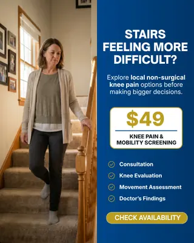
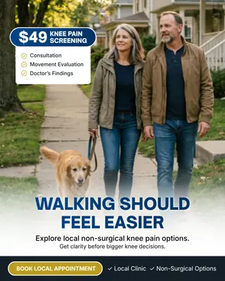
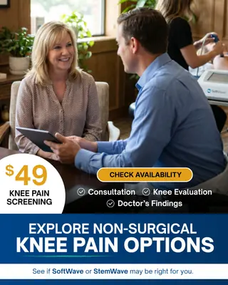
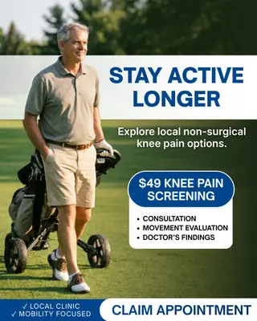
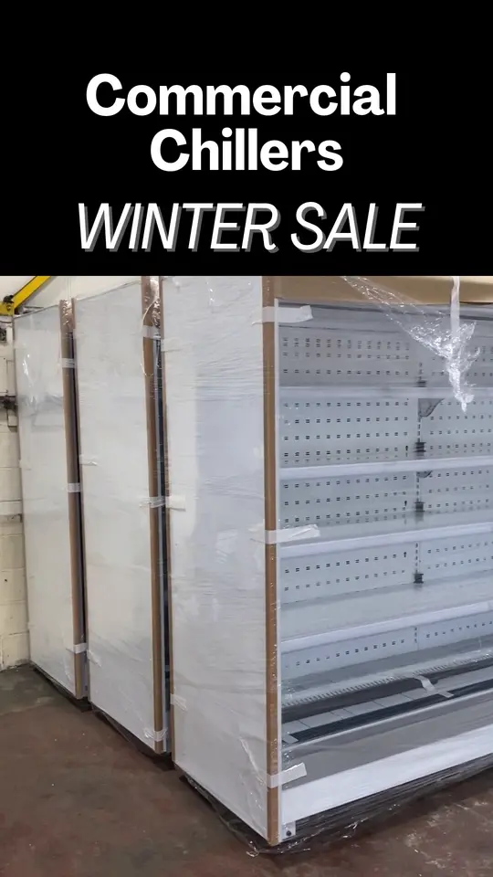
Ad creativevideo Play the B2B refrigeration video ad
9.5×
Lead volume
~75% lower CPL
Same account
Cost per lead is quoted per campaign — never total spend divided by total leads. No ROAS theatre, no borrowed outcomes, source status shown.
The proof tour / 01
One operator.
Three surfaces.
Not a collage of deliverables. The same chain a growth problem travels — attention, then the system, then the evidence — with the handoffs removed.
Brief → angles → variations
Make the market stop.
The opening move is not more media. It is a sharper reason to notice, care and act — written as a set of testable hypotheses against one offer, so the market tells you which door it wanted.
The operating idea
Same offer. Eight hypotheses. One coherent visual world.
Media → routing → follow-up
Turn attention into an operating flow.
The part most media buyers skip: integrated GoHighLevel follow-up systems that convert paid leads into booked appointments. Campaigns, lead routing, booking logic and operator visibility belong in one accountable system — the handoff is part of the work.
Claim → source → boundary
Show what happened. Show where it stops.
Every number earns a status, a source and a boundary. That makes the strongest true case without borrowing certainty the evidence cannot support — and it is published as a contract, not a promise.
9.5×
Lead volume
~75% lower CPL
Same account
Claim anatomy
Verified — tier A, a hard artifact: a retained, re-checkable platform record.
Exact-match verified from the live ad account — both operators’ campaigns are read from the same account’s own reporting.
A same-account comparison, not a controlled split test. The incumbent agency is never identified. Client revenue is not claimed.
Client creative / 02
Client campaigns,
as they ran.
Static ad creative built for paid campaigns that spent real money — a chiropractic screening offer written eight ways, laser hair removal in six art directions, body contouring in five castings, Botox and GLP-1 offers, and B2B commercial refrigeration. Open any tile.
Craft evidence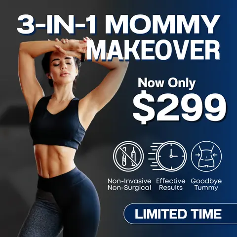
Open Med spa · Body contouring 07Open Chiropractic · Symptom-aware 08Open Med spa · Laser 09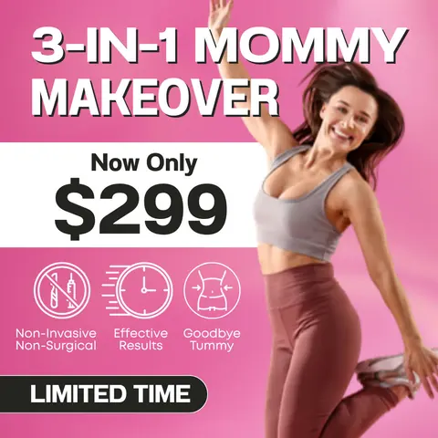
Open Med spa · Body contouring 10Open Chiropractic · Identity-led 11Open Med spa · Laser 12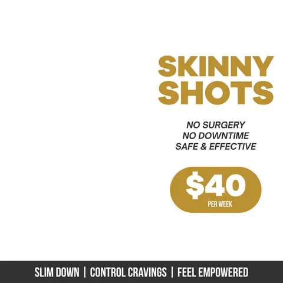
Open Med spa · GLP-1 13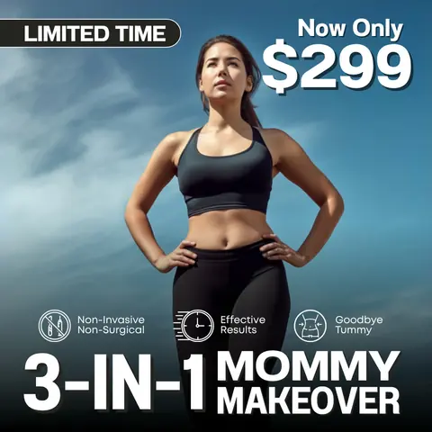
Open Med spa · Body contouring 14Open Chiropractic · The control 15Open Med spa · Laser 16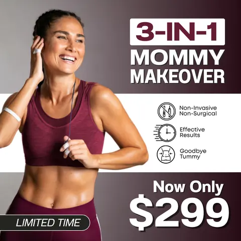
Open Med spa · Body contouring 17Open Chiropractic · Symptom-aware 18Open Med spa · Laser 19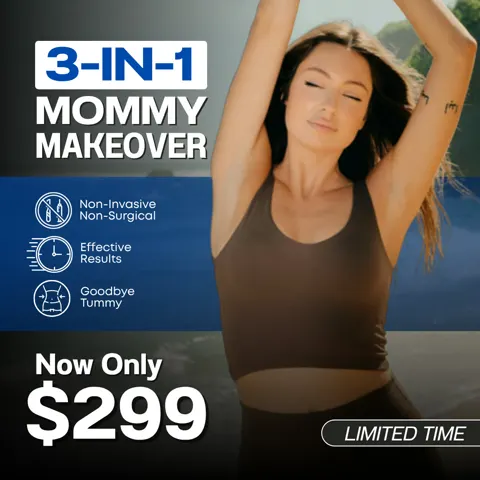
Open Med spa · Body contouring 20Open Med spa · Laser 21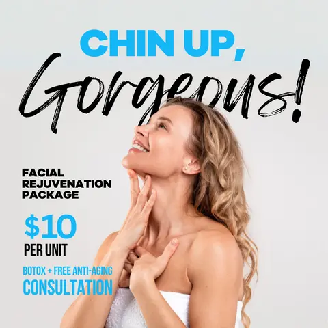
Open Med spa · Botox 22Open B2B refrigeration 23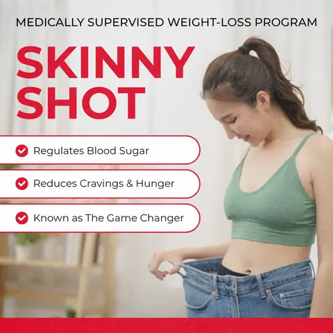
Open Med spa · GLP-1 24Open B2B refrigeration 25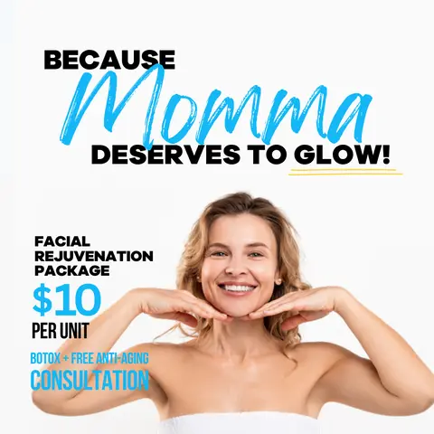
Open Med spa · Botox 26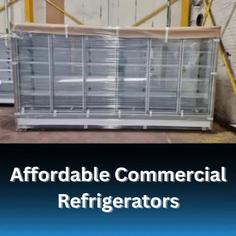
Open B2B refrigeration 27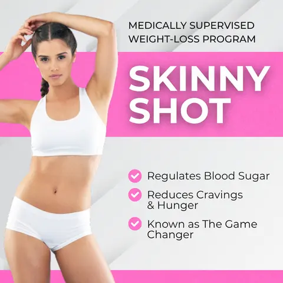
Open Med spa · GLP-1 28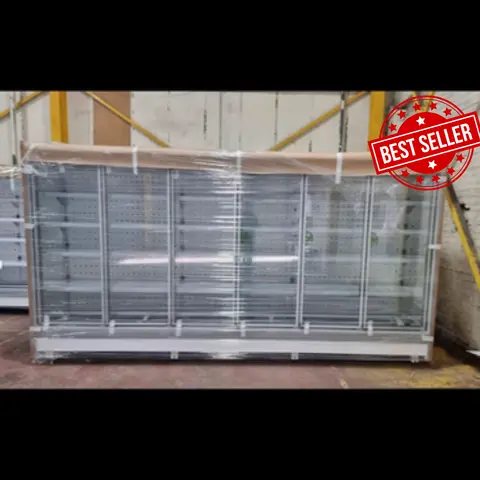
Open B2B refrigeration 29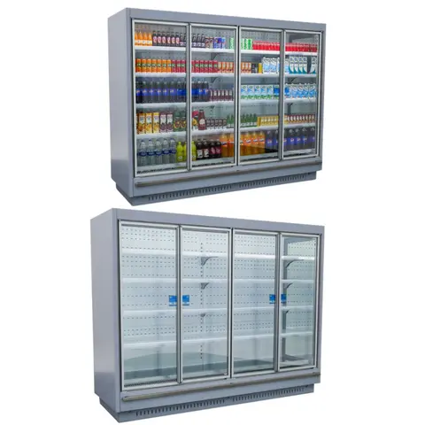
Open B2B refrigerationCreative and performance are adjacent evidence here — not a single-asset causation claim. Clients appear by vertical only.
Video ad creative / 03
Where the creative
really competes.
A client video ad first, then one own-brand hook that came out of the AI creative pipeline — labelled as exactly that, because the generator is available to everyone and the judgment is not. Self-hosted from this origin; nothing autoplays and nothing loads until you ask.
B2B, at consumer-grade cost.
A U.K. commercial-refrigeration installer — the account behind the cheapest cost per lead on this site. Client work, as it ran.
One hook that cleared the gate.
An AI-generated UGC hook with a claim-free end card, for a product I own. One of the few that made it through the review gate below — labelled concept, not campaign.
Operating leverage / 04
One operator,
few handoffs.
A growth problem travels a long chain — signal, research, the economics, the decision, the system, the build, the measurement — and normally it changes hands four or five times on the way. Here it mostly does not, and that is the thing AI actually changed about this job. Client systems first, then my own; each caption says what you will really find, including where you will hit a sign-in wall.
Client systems
The follow-up engine, and AI voice inside live client accounts.
The part most media buyers skip: integrated GoHighLevel follow-up systems that convert paid leads into booked appointments — speed-to-lead, missed-call text-back, SMS and email nurture, reminders, reactivation, built as one system rather than seven automations.
On top of them: AI voice and conversational booking agents running in four live client accounts across three countries, earliest published February 2025 — wired into the same GoHighLevel builds that carry the speed-to-lead, no-show recovery and reactivation sequences. Deployment claim, not a volume claim: enrolments are single-digit to low-double and are stated as such.
- GoHighLevel builds — no HubSpot client build is claimed
- Four live client accounts, three countries
- Deployment, not scale
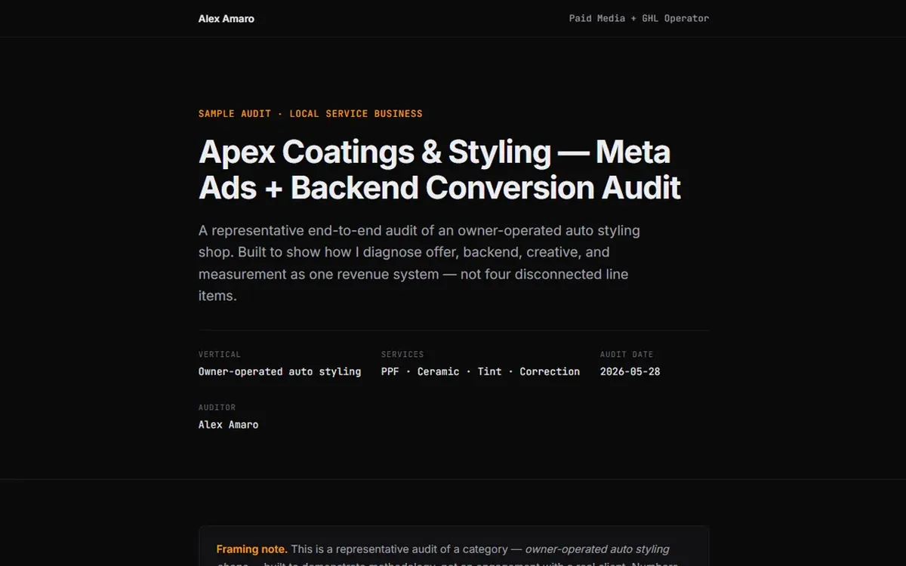
How I diagnose an account
Proof should survive inspection.
Offer, backend, creative and measurement read as one revenue system rather than four line items — which is the difference between an audit and a list of screenshot findings. It is a sample, a representative audit of a category, labelled as such on its own first screen. No real client, no borrowed numbers.
- Live
- Sample, not a client
- Explicit boundaries on every finding
The economics
The media buyer’s model.
Spend to leads to booked jobs to return, with the whole chain shown and a panel that moves one input at a time. It exists to make an argument I will defend: on most local accounts cost per lead is the smallest of the three levers, and booking rate is the one worth engineering. That is why I do not optimise to cost per lead alone.
- No sign-in, nothing stored
- One variable at a time
- Recomputes from your inputs, in your tab
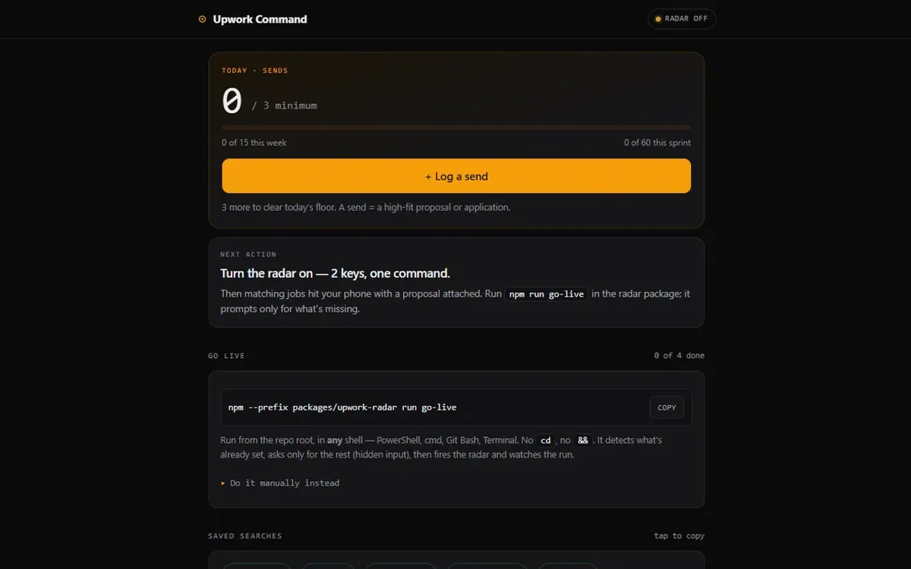
Agentic research
Signal, triage and action in one view.
An autonomous opportunity radar in TypeScript on a 30-minute GitHub Actions cron: it reads a saved-search inbox over IMAP, parses title, URL and budget, scores each opportunity against a rubric, drafts the proposal with prompt-cached templates and posts it to Slack with the draft attached. It has no public URL because it holds live inbox and Slack credentials — what you can open is the single-operator dashboard it reports into.
- Dormant-safe: with no secrets set it exits green with a notice
- The rubric is the IP; the pipeline is public
- One next action instead of twelve charts
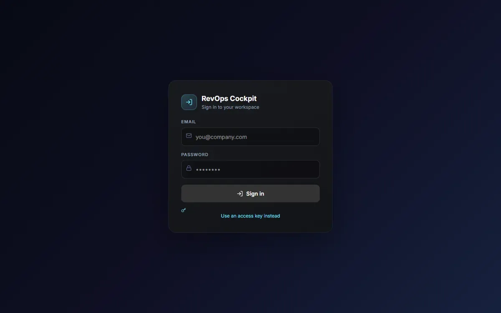
My own back office
The work does not stop at the lead.
Next.js and Supabase, with three daily crons: scrape, enrich, then generate outreach scripts and push them into the CRM and a cold-email sequence. What you will see is the door — the shell is public, the data is behind a sign-in, and I would rather you know that before you click than after.
- Live
- Next.js, Supabase, three daily crons
- Sign-in wall
Where the leverage came from. Before any of this, I ran my own agency with a four-person delivery team — call center, media buyer, ad-creative specialist, GoHighLevel specialist — for roughly ten months, before rebuilding that same capability as AI systems. That one is founder-attested rather than documented, and I label it that way. It is also the honest origin of the heading above: the handoffs did not disappear because the work got smaller.
The gate / 05
Most generations
don’t make it.
Generative tools are available to everyone, so the generator is not the evidence. The judgment is. Every AI generation in the creative pipeline is logged to a manifest with its model, its named test variable and a craft verdict — and the reject pile is the part most portfolios would hide.
109
generations logged in the manifest.
12
accepted on craft.
Craft is the review verdict — did the clip clear the brief — not a market result. Market verdicts come from a control, never from anyone’s taste.
25
rejected — each with a written reason.
The notes are specific or they are useless: a phone visible in a shot that specified none, a sign that would not spell, a delivery measured slow against its own word budget. The note is the asset — the next brief inherits it.
72
still in the queue, unjudged.
Logged is not shipped. Volume only counts after the verdict.
The films run the same discipline: a beat-sheet manifest per cut, then measured gates — a loudness window, a longest-gap check on speech pacing, letterbox and edge-density sweeps. A cut that misses a gate goes back, not out. This is what “creative volume” means here: not more generations — more judged generations. Counts as of 2026-09-04, from the manifest’s craft field; the check that keeps them honest runs on every push to this repository.
Evidence ledger / 06
A source — and
a stopping point.
Proof tells the truth twice: what happened, and where the claim ends. Cost per lead is quoted per campaign, never blended across an account set, and every lead number here is qualified — B2C forms carried qualifying questions, B2B forms filtered for revenue. Every row below is the contract’s own wording, with its status and evidence tier — A is a hard artifact, B measured but uncaptured, C structural, D attestation.
01$225K+Meta ad spend managed Verified · A
Two independent platform pulls, nineteen days apart, agree within a tenth of a percent; the per-account export is retained in the vault.
$225K+ in Meta ad spend managed across 14+ accounts in the U.S., Canada and the U.K. — medspa, aesthetics, chiropractic, tattoo removal, weight loss, local service and B2B.
A majority of this spend sits on one account and includes awareness objectives — it is spend managed, and it is never paired with lead totals to imply a blended cost per lead.
029.5×Lead volume against an incumbent national agency, same account Verified · A
Exact-match verified from the live ad account — both operators’ campaigns are read from the same account’s own reporting.
Took over a chiropractic account from an incumbent national agency and delivered 9.5x the leads at ~75% lower cost per lead — same account (114 @ $12.59 vs 12 @ $49.81).
A same-account comparison, not a controlled split test. The incumbent agency is never identified. Client revenue is not claimed.
03~US$5.40Average cost per lead, a whole Canadian body-contouring account Verified · A
Lead volume and cost are platform-verified from the raw export; the booked count comes from the client’s tracker and is labelled as such.
1,192 leads at ~US$5.40 average cost per lead (CA$7.39) across an entire Canadian body-contouring account — CA$8,804 spend, 13 lead campaigns, 80 booked appointments tracked.
The account average is honest because the whole account was lead-objective — it is not a blended figure. The 80 booked appointments are tracker-corroborated, not platform-verified, and the claim says which.
0470Booked appointments in a 30-day window, a weight-loss clinic opening Verified · A
Verified from the CRM tracker, deduplicated row by row.
70 booked appointments in a 30-day window (61 in the calendar month) for a weight-loss clinic grand opening.
Booked means scheduled, not attended.
05~120Appointments booked in roughly three months, an aesthetic clinic Partial · B
Double-sourced — the client tracker and the CRM agree within a handful of rows; the platform-side export did not survive off-boarding.
~120 appointments booked in roughly three months for an aesthetic clinic (double-sourced: CRM + tracker).
Booked means scheduled — show rate is not claimed. Quoted as an approximation, never rounded up.
06350+Bilingual FR/EN leads, and 89 booked appointments, in ~10 weeks Partial · A
The lead floor sits under a photographed, DOM-verified count in a dedicated sub-account that held nothing else; the booked count is exactly the number of dated rows in the client’s tracker.
350+ bilingual (FR/EN) leads and 89 booked appointments in ~10 weeks for a Montreal beauty brand — roughly one booked appointment per four leads.
Exact cost per lead is retired in every form — the ad account was revoked and nobody can check it, so it is not quoted. 89 means 89 dated rows — a row without an appointment date is not a booking.
07~$1.88Cost per lead across 817 B2B leads, a U.K. commercial-refrigeration installer Verified · A
Platform-verified on an account still in Meta access, running continuously since June 2024 — re-checkable today.
817 B2B leads at ~$1.88 CPL for a UK commercial-refrigeration installer — flagship campaign 709 leads at ~$1.50, ongoing since June 2024. The lead forms carried qualification, and the client reported a completed installation off the back of the leads.
The cheap exception — B2B is not generalized from it. The client’s completed installation is lead-quality evidence, never claimed revenue.
081,750+Leads for a single med spa across four service lines Verified · A
Platform-verified across four service lines on one account.
1,750+ leads for a single med spa across four service lines, including 1,200+ weight-loss leads at ~$9 CPL.
One clinic, one programme — quoted per campaign, never blended with any other account.
09730+Tattoo-removal leads at ~$19–$21 CPL, Brooklyn/NYC Verified · A
Platform-verified. The flagship campaign is quoted with its own count and the account total with its own range — never the total at the flagship’s price. The client’s video testimonial exists and is cleared for portfolio and interview use.
730+ tattoo-removal leads at ~$19–$21 CPL (Brooklyn/NYC), flagship campaign 526 at $19, with 701 of the CRM’s 773 contacts traceable to named Facebook lead forms. My longest-running client — roughly two years and still running — and the one account where the client went on camera for me.
Any cost per lead is quoted against the platform’s count, not the CRM’s later total. The testimonial is cited, not quoted.
10~35%Lower cost per lead than another operator, same chiropractic account Verified · A
Read from the account’s own reporting — every one of my campaigns beat every one of the other operator’s, and the other operator’s larger volume on larger spend is stated in the same breath.
Chiropractic lead-gen built on a priced $47 new-patient offer, run through Meta instant forms into a GoHighLevel pipeline I built. My campaigns: $30.38 blended, per-campaign $27.68–$35.23. Another operator’s lead-form campaigns in the same account: $46.58 blended, $45.01–$53.42 per campaign. They spent 2.8x what I did to reach 250 leads against my 139. Campaign dates were not retained, so I call it a same-account comparison rather than a split test.
A same-account comparison — never a takeover, never a split test. The other operator is never named or characterized.
11215+Website-scheduled appointments, the agency’s own B2B campaigns Verified · A
Meta-reported website-scheduled appointments from the agency’s own acquisition campaigns.
170+ B2B leads and 215+ website-scheduled appointments at ~$62 each, from campaigns selling agency services into the medspa/clinic market.
Scheduled appointments, never “booked sales calls” — the platform records the schedule event, not attendance or attendee identity.
126,250+Qualified leads across the client base Verified · A
An itemized floor — counted account by account from clean lead campaigns only, excluding awareness and traffic spend, and excluding accounts lost at off-boarding.
6,250+ qualified leads across medspa, aesthetics, chiropractic, tattoo-removal, weight-loss and B2B campaigns — an itemized floor, counted account by account.
Never paired with total spend to imply a blended cost per lead.
Before the build / 07
Decide what the media
should point at.
The front of the chain, and the part that decides whether the rest should run at all. A signal — a market, a programme, a partner — is read from public sources and made to answer in a fixed order. Research that does not change a decision is not a receipt. Meta paid social stays the specialty; this is how I decide where to aim it.
Public record only, dated. Verified fact, inference, estimate and hypothesis are labelled as which.
What it is worth, modelled in the buyer’s own numbers — low, base and high — never linked to and assumed.
Who already holds the ground: the incumbent, its tenure, the credentials the scorecard rewards.
OWN when depth compounds. ASSEMBLE when a specialist should execute. PARTNER when someone already holds the trust. PARK when opportunity cost dominates.
Downside, base and upside, each with the assumption that produces it — decision thresholds where a probability would be fake precision.
GO, ITERATE, PARK or KILL — and the honest output is usually PARK.
The cheapest external act that would change the decision. The worked briefs are private, because they are written for the people they are about; the discipline is not.
Public-program participant operations.
A publicly funded programme creates value only when the people it was built for get from awareness to completion — and the outreach, intake, follow-up, scheduling and reporting between those two points are usually fragmented. The thesis under validation: that participant-operations infrastructure is a repeatable category rather than a one-off pattern, and that the right way in is as a partner beneath an established programme operator, never as a prime.
Exploratory. Nothing has shipped, nothing is claimed, no partner or programme is named. A called shot is a dated, falsifiable statement filed before the outcome is known; the verdict is printed here on the resolution date, and a miss is rendered exactly like a hit.
Verdict · pending · 2026-09-25The work / 08
Eighteen cases, each with
what it does not claim.
Every case page ends with a section headed “what this case does not claim” — the boundary stated before anyone has to ask for it. Seven of the eighteen carry no figure at all, because no approved figure exists for them, and they say so rather than reaching for a number.
The record / 09
Every number here
stands cross-examination.
A marketer’s portfolio has one structural weakness: the figures are assertions, and the reader has no way to test them. This one answers that mechanically rather than rhetorically. The contract is published and machine-readable, the adversarial audit is public with the attacker’s prompt included, an agent will answer hostile questions from the contract alone, and the repository this page is served from refuses to publish a figure the contract does not hold.
The contract
Every figure on this site with its status, evidence tier, provenance and boundaries — and the claim I retired, with the reason I retired it. The file carries its own sha256, so a hand-edit cannot ship quietly. There is a plain-language pointer for agents alongside it.
claims.json llms.txtThe cross-examination
Published before the run rather than after it: exhibits from the record’s own history — the figure I withdrew on my own review, the time a guard passed something it should have caught — the standing adversarial machinery, and the attacker’s prompt in full, so you can run a harsher one than mine.
The audit record →The interrogation room
An agent that answers only from the published contract, cites the claim it is answering from, and refuses out loud where the record is silent. Ask it the hostile question first — whether a number is blended, what is attested rather than verified, what was withdrawn. Agents can post a question to the same service directly.
proof-counsel.vercel.app (opens in a new tab)The guard on this repository
The source of this page is public, and every push runs a salted-hash leak tripwire and a contract-integrity check. The eighteen case pages are rendered from the contract by a build that refuses to emit any figure it cannot find there, and this page holds itself to the same rule: every claim block is checked against the contract’s own wording, and the gate counts against their dated snapshot. That is the AI-native part I would actually defend: not that a model wrote something, but that a gate I built runs on every commit whether or not I am paying attention.
github.com/AlexFC0810/alex-amaro-portfolio (opens in a new tab)


{kind=link}
{kind=link}
{kind=link}
{kind=link}
{kind=link}
{kind=link}
{kind=link}
{kind=link}
{kind=link}
{kind=link}
{kind=link}
{kind=link}
{kind=link}
{kind=link}
{kind=link}
{kind=link}
{kind=link}
{kind=link}
{kind=link}
{kind=link}
{kind=link}
{kind=link}
{kind=link}
{kind=link}
{kind=link}
{kind=link}
{kind=link}
{kind=link}
{kind=link}
The next brief / 10
Bring me the account
that has stopped moving.
Where the offer, the creative, the follow-up and the measurement collide — that is the work, and here it is one pair of hands. Every number above has a source. So will the next one.